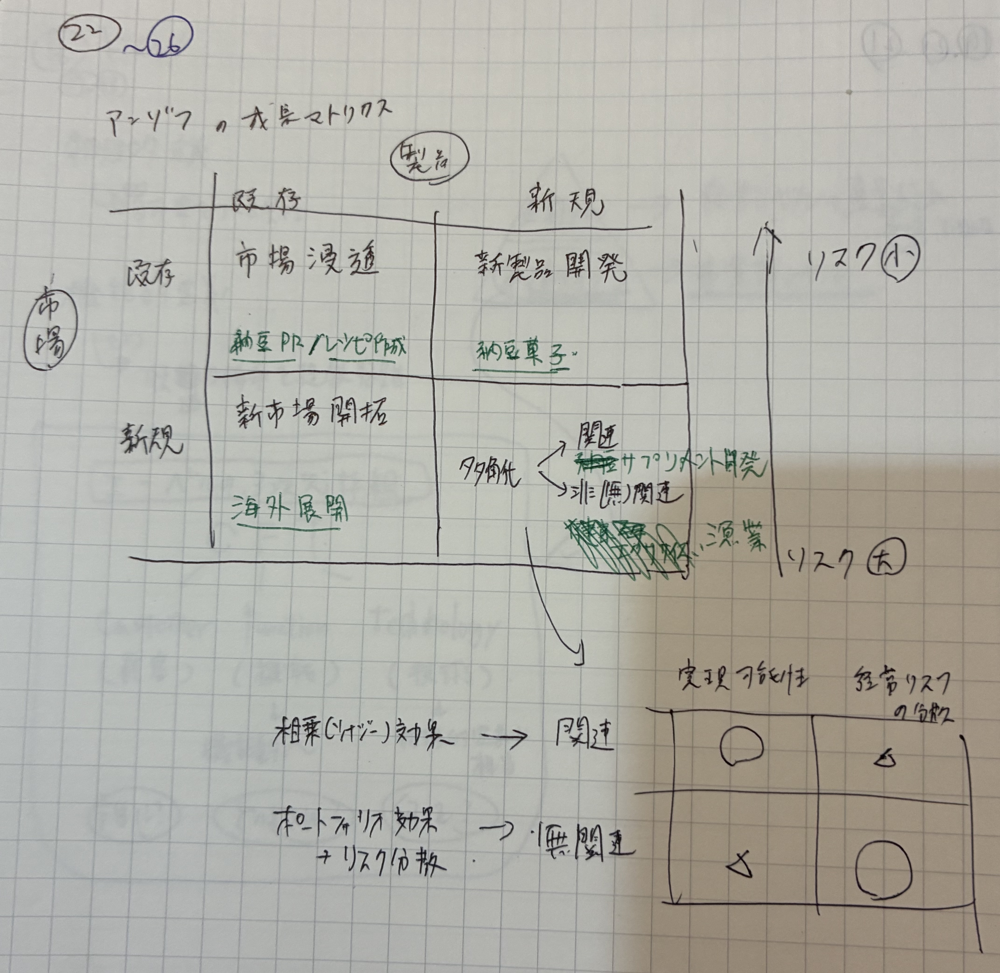
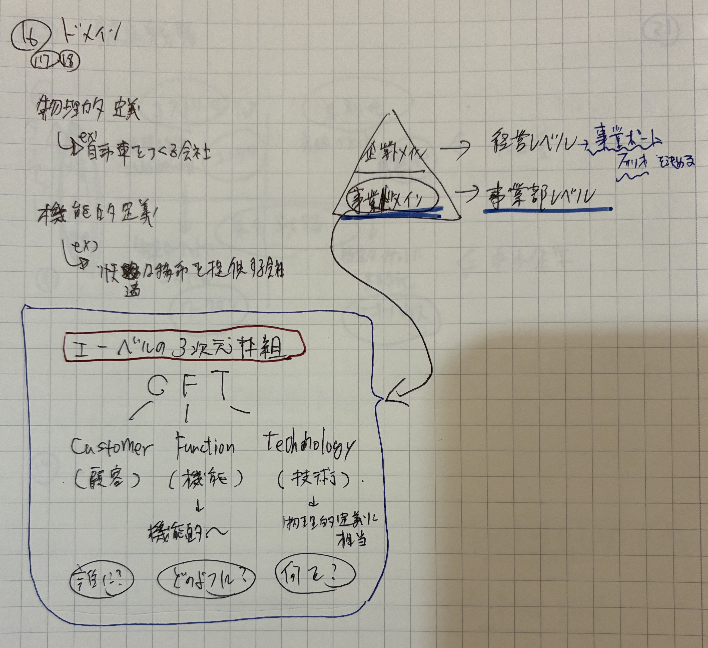
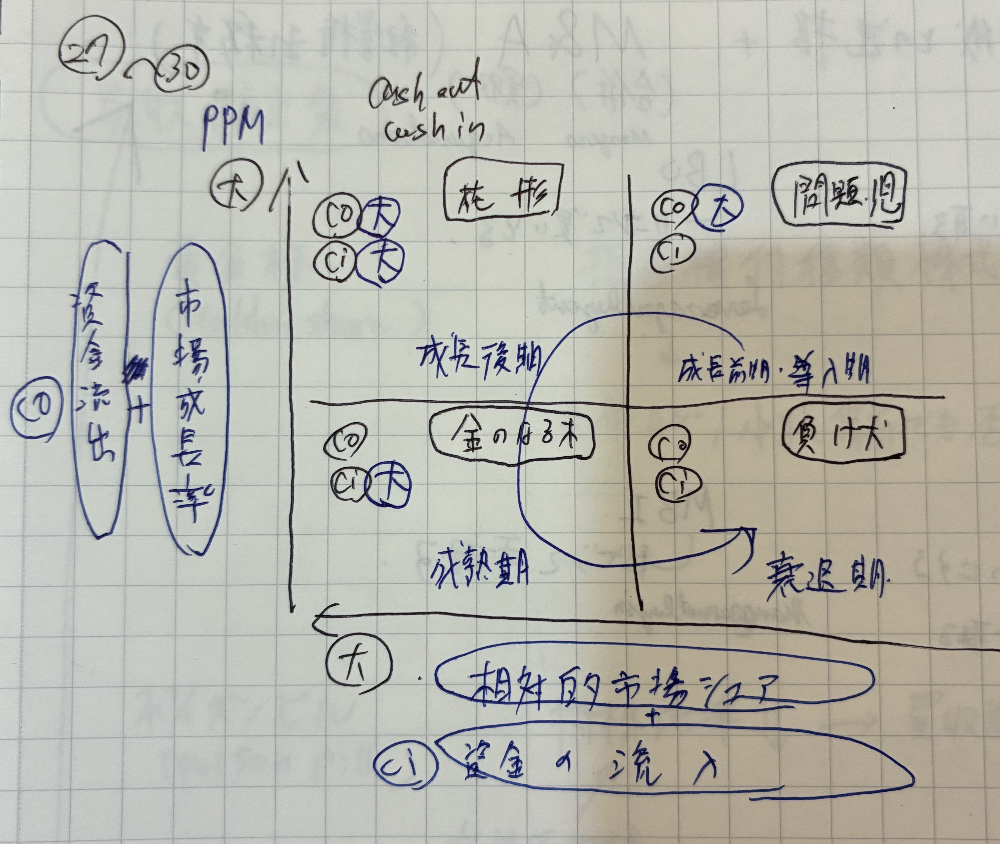
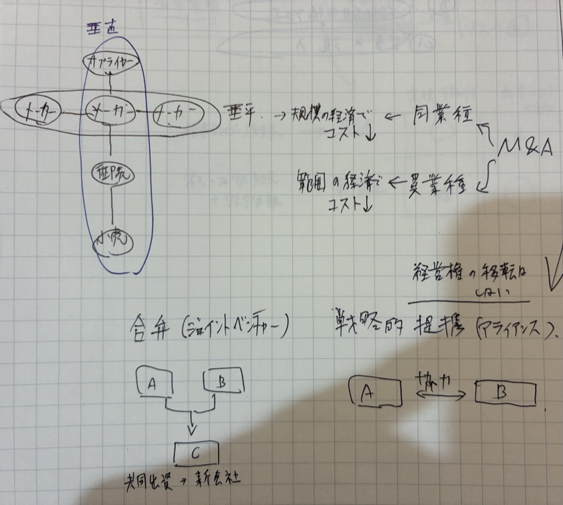
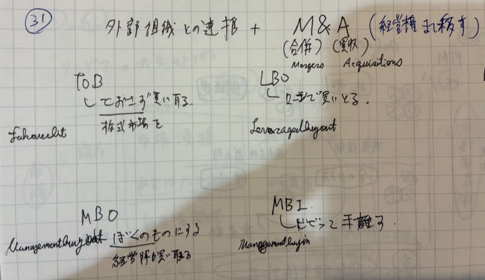
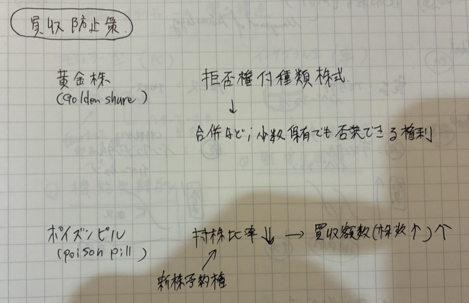

| テーマ | 出題数 | 動向 |
|---|---|---|
| ① アンゾフ・多角化（成長ベクトル） | 毎年3〜5問 | R07-2で4戦略明示、R07-1シナジー |
| ② シナジー・範囲の経済 | 9問以上 | R01/R04/R05/R05追/R06/R07 |
| ③ PPM 4象限 | 6問 | R01/R03/R04/R05/R05追/R06毎年 |
| ④ M&A・戦略的提携 | 5問 | R03のれん／R04 TOB敵対的／R05追JV |
| ⑤ ドメイン | R06新出 | R06-28で事業領域明示 |
| 製品：既存 | 製品：新規 | |
|---|---|---|
| 市場：既存 | ① 市場浸透 既存品でシェア拡大 | ② 新製品開発 既存顧客に新製品 |
| 市場：新規 | ③ 新市場開拓 既存品を新市場へ | ④ 多角化 新製品×新市場 |
①〜③＝拡大化戦略（既存資源の延長）／④＝多角化戦略（最もリスク大）

1次引っかけ①：「海外に既存製品を展開する＝新製品開発」→ 誤り。市場が新規・製品が既存なので③新市場開拓が正解。「海外」は市場の話。
1次引っかけ②：「既存顧客に新機能を追加した製品を売る＝新市場開拓」→ 誤り。市場が既存・製品が新規なので②新製品開発が正解。「新機能の製品」は製品の話。
1次正文③：「①市場浸透はリスクが最も低い」→ 正しい。既存×既存なので最低リスク。逆に④多角化（新×新）は最大リスク。
1つの会社で複数事業をやると、別々にやるよりも「掛け算」で効果が出ること。例：技術・ブランド・販売チャネルを共有してコスト削減や売上増。
📚 R07-1R06-1R05-14R05追-17R01-7
事業の幅を広げて得る効果
複数事業で資源共有→コスト減
同じ事業の量を増やして得る効果
大量生産で1個あたりコスト減
1次引っかけ：「範囲の経済＝大量生産でコスト下がる」→ 誤り、それは規模の経済。範囲は異なる事業を組み合わせて得る効果。
📚 R06-6R05-7R04-13R02-4,5R01-5
| 製品：既存 | 製品：新規 | |
|---|---|---|
| 市場：既存 | ① 市場浸透 | ② 新製品開発 |
| 市場：新規 | ③ 新市場開拓 | ④ 多角化 |
①〜③＝拡大化戦略／④＝多角化（最もリスク大）
3つの論点が全部つながってる。順番に整理しよう。
「事業領域を決め → 増やし → 取捨選択する」の3ステップ！
この「誰に・何を・どう」の3点セットを定義するのがドメイン。
🔁 元ノート「ドメイン」を補強。R06-28で「事業領域」が明示出題。エーベルの3次元と切り口3軸を整理。
戦略立案の第一歩。事業を行う領域を定義することで、①意思決定の明確化、②経営資源の集中、③組織の一体化が実現する。
📚 R06-28R05-1R01-1
「ウチはドリル屋です」
→ 電動工具メーカーに食われて衰退
「ウチは穴あけソリューション業」
→ レーザー加工・3Dプリンタへ転換可
💡 お客さんが買っているのは「ドリル」じゃなく「穴」だった！
| 定義 | 視点 | 例 | リスク／メリット |
|---|---|---|---|
| 物理的定義 | モノ視点 | 「我々は鉄道事業者である」 | マーケティング・マイオピア（近視眼）に陥る |
| 機能的定義 | コト・顧客視点 | 「我々は運輸サービス業である」 | 事業展開の柔軟性UP（ただし広すぎ注意） |
「運輸業」と定義していれば、車も飛行機もライバルと認識できた。
1次試験ポイント：マーケティング・マイオピア＝物理的定義の弊害。機能的定義の方が発展的だが、抽象的すぎると焦点ボケのリスク。
1次引っかけ：「機能的定義は常に物理的定義より優れる」→ 誤り、抽象的すぎると焦点を失う。「マイオピアは機能的定義の弊害」→ 誤り、物理的定義の弊害。
※エーベル（Abell 1980）の3次元：「Customer Groups（顧客）／Customer Functions（機能）／Technologies（技術）」と対応。

本が売れなくなった
→ 既存事業の停滞
カフェ業界が伸びてる
→ 他業界の魅力
空いてる席・常連客がいる
→ 組織スラック＋シナジー
💡 「外から押される」「自分から動く」の2系統で理由が説明できる！
🔁 元ノート「多角化の動機」を補強。スタディング標準分類に整合。
| 分類 | 動機 | 説明 |
|---|---|---|
| 外部誘因 | 既存事業の停滞 | 成長率が頭打ち、需要が不確実 |
| 他業界の魅力 | 他業界の成長機会 | |
| 内部誘因 | 新事業による成長 | 新分野で成長を図る |
| リスク分散 | 複数事業で経営リスクを分散 | |
| 組織スラック活用 | 余剰資源（設備・資金・技術）の有効活用 | |
| シナジー追求 | 既存事業との相乗効果（販売・生産・マネジメント） | |
1次試験ポイント：「外部誘因／内部誘因」の分類自体が問われる。組織スラック＝余剰資源（人・モノ・カネの余り）。
📚 R03-1,15R02-2R01-3
| シェア：高 (勝ってる) | シェア：低 (負けてる) | |
|---|---|---|
| 成長率：高 (伸びてる) |
⭐ 花形 📱モバイル注文アプリ 伸びてる＆勝ってる。投資続行 |
❓ 問題児 🥗ヘルシーメニュー 市場は伸びてるが負けてる。投資判断 |
| 成長率：低 (成熟) |
💰 金のなる木 🍔ハンバーガー本業 稼ぐ柱。利益を他へ回す |
🐕 負け犬 📞固定電話デリバリー 負けてる＆伸びてない。撤退 |
💡 「稼ぐ事業のお金を、伸ばす事業に回す」のが基本セオリー！
🔁 元ノート「PPM」を補強。R01・R03・R04・R05・R05追・R06と毎年出題、4象限と前提が問われる。
| 相対的市場シェア：高 | 相対的市場シェア：低 | |
|---|---|---|
| 市場成長率：高 | ⭐ 花形（Star） 売上大／投資も大／CF±0 | ❓ 問題児（Question Mark） 投資要・将来性見極め |
| 市場成長率：低 | 💰 金のなる木（Cash Cow） 利益大／CF＋／投資少 | 🐕 負け犬（Dog） 撤退検討 |
基本セオリー：金のなる木のCFを問題児に投資→花形へ→金のなる木へのサイクル。負け犬は撤退候補。

1次試験ポイント：2前提（経験曲線＋PLC）を答えさせる出題が多い。「相対的市場シェアの境界＝1.0倍（自社÷トップ）」も頻出。
1次引っかけ：「PPMは絶対的市場シェアで判定」→ 誤り、相対的市場シェア。「経験曲線は単に生産経験で熟練が上がる」→ 累計生産量2倍で20-30%減という具体経験則。
📚 R06-4R05-1R05追-2R04-2R03-2R01-2
| 定義 | 視点 | 例 | 弊害／効果 |
|---|---|---|---|
| 物理的定義 | モノ | 「鉄道事業者」 | マーケティング・マイオピア |
| 機能的定義 | コト・顧客 | 「運輸サービス業」 | 事業展開の柔軟性UP |
エーベル3次元：顧客軸／機能軸／技術軸
| シェア：高 | シェア：低 | |
|---|---|---|
| 成長率：高 | 花形 | 問題児 |
| 成長率：低 | 金のなる木 | 負け犬 |
PPM 2前提：経験曲線効果（累計2倍で20〜30%減）＋プロダクトライフサイクル
「なぜ事業を増やすと得なのか（シナジー）」「どう増やすか（4類型）」「実際どう分類するか（ルメルト3指標）」の3ステップ。
かき氷（夏） ＋ おでん（冬）
→ 1年中売上が安定。需要の平準化＝コンプリメント。
でもブランドも技術も別物だから"掛け算"はない。
かき氷ノウハウ × アイスクリーム製造
→ 冷凍技術・配送網・ブランドを共有。
情報的資源の多重利用でコストも売上も伸びる。
💡 「資源を共有できる？」がシナジー、「時期がズレてる？」が相補と覚える！
🔁 元ノート「シナジー」を補強。R02-5「相補効果」が明示出題。両者の区別はスタディング標準論点。
掛け算的効果
情報的資源の多重利用
例：ブランド・技術・ノウハウ
足し算的効果
需要変動の平準化
例：夏冬商品の組合せ
1次試験ポイント：相乗＝掛け算（情報的資源の多重利用）／相補＝足し算（需要変動平準化）。混同が頻出。
1次引っかけ：「相補効果はブランド共有による掛け算的効果」→ 誤り、それは相乗効果。「シナジーは需要変動を平準化する」→ 誤り、それは相補効果。
📚 R07-1R06-1R05-14R05追-17R04-1R02-5
同じ顧客にサンドイッチも売る
→ 同タイプ顧客×新製品自分で小麦栽培を始める（川上へ）
→ 原料・部品側へ進出＝後方自社のカフェ店舗を出す（川下へ）
→ 販売・流通側へ進出＝前方小麦技術で業務用パン市場へ
→ 関連製品×新市場パン屋なのに不動産業も始める。関連性なし、リスク最大。
💡 水＝横／垂＝縦／集中＝関連あり／集成＝バラバラで覚える！
⚠️ 「川上＝前方」「川下＝後方」と覚えるのは間違い！
🔁 元ノート「多角化の分類」を補強。R02-17、R04-1で関連／非関連の区別が問われた。
| 類型 | 定義 | 例 |
|---|---|---|
| 水平型 | 同タイプの顧客に新製品投入 | 家電メーカーが家庭向け新カテゴリ参入 |
| 垂直型 | 商流の川上・川下への進出 （川上＝後方／川下＝前方） | 製造業が小売へ進出（前方）／部品製造へ進出（後方） |
| 集中型 | 現製品と関連する商品を新市場へ | カメラ技術で医療機器市場へ |
| 集成型（コングロマリット） | 製品も顧客も関連性が低い 新製品を新市場に | 商社の多業種展開 |
1次試験ポイント：垂直型の前後方（川上＝後方／川下＝前方）が混同しやすい。集成型＝コングロマリット＝関連性希薄。
1次引っかけ：「川上への進出は前方多角化」→ 誤り、後方。「水平型は商流上下への進出」→ 誤り、それは垂直型。
📚 R02-17R04-1
| 指標 | 計算内容 | 例：パンSPAグループの値 |
|---|---|---|
| 専門化率 | 最大事業の売上 ÷ 全社売上 | パン製造 60億 ÷ 100億 ＝ 60% |
| 垂直率 | 垂直統合事業の売上 ÷ 全社売上 | 小麦栽培＋カフェ 25億 ÷ 100億 ＝ 25% |
| 関連率 | 本業と関連する事業の売上 ÷ 全社売上 | パン製造＋小麦＋カフェ＋業務用 95億 ÷ 100億 ＝ 95% |
💡 関連率95%＝ほぼ全部関連事業＝関連集約型（ルメルトの実証で最高業績タイプ）！
🔁 元ノート「ルメルト」を補強。スタディングが標準として掲載、R06-3関連。
| 類型 | 意味 |
|---|---|
| 集約型 | 事業間の関連性があり、シナジーを重視した多角化 |
| 拡散型 | 現有経営資源を利用して連鎖的に新分野へ進出 |
1次試験ポイント：3指標の値で多角化タイプ（専業／本業中心／関連／非関連）を分類。
楽天：EC→金融→通信→ポイント
→ 全部「楽天ID＋ポイント」でつながる。
顧客基盤・ノウハウを共有できる。
仮想：パン屋＋不動産＋IT
→ 共通点なし。ノウハウも顧客も別物。
シナジー薄く、経営難易度↑。
💡 ルメルト（1974）の実証：「関連型 ＞ 非関連型」の収益性が証明された！
| 関連型多角化 | 非関連型多角化 | |
|---|---|---|
| 事業間関連 | 技術・販路・ノウハウ共有あり | 関連性希薄（管理スキル・財務以外） |
| シナジー | 強い（範囲の経済を享受） | 弱い |
| リスク | 低い（既存資源活用） | 高い（経験不足） |
| 収益性 | 高い傾向 | 低い傾向 |
1次試験ポイント：ルメルトの実証研究で「関連型＞非関連型」の収益性が示された点が頻出。
📚 R06-3R04-1R02-17
| 相乗（シナジー） | 相補（コンプリメント） | |
|---|---|---|
| 性質 | 掛け算的 | 足し算的 |
| メカニズム | 情報的資源の多重利用 | 需要変動の平準化 |
| 類型 | 定義 |
|---|---|
| 水平型 | 同タイプ顧客に新製品 |
| 垂直型 | 川上＝後方／川下＝前方 |
| 集中型 | 関連商品を新市場へ |
| 集成型 | コングロマリット。関連性希薄 |
ルメルト3指標：専門化率／垂直率／関連率
他社と関わる時のコミットメント＝「のっとる→組む→切り出す」の度合い。
「完全合体（M&A）⇔ 切り離し（分離）」までの関係の濃さを学ぶ4テーマ！
結婚して別世帯になる。
2社が1つの法人に。
居候として受け入れる。
株式取得で支配。法人は別のまま。
引っ越し荷物の一部だけもらう。
特定事業だけ売買。
💡 合併＝法人ひとつに／買収＝法人別だけど支配／譲渡＝事業の切れ端だけ！
のれん＝買収価格－純資産。「目に見えない価値（ブランド・顧客・人材）」のお値段。日本基準は規則償却＋減損！
🔁 元ノート「M&A」を補強。R03-3のれん／R04-5 TOB敵対的買収／R05追-29 JV／R06-5買収など継続出題。

| 方式 | 内容 | 会計処理 |
|---|---|---|
| 合併 | 2社以上が1つになる （吸収合併／新設合併） | 取得原価で会計処理 |
| 買収（株式取得） | 株式を取得し支配権獲得 | のれん計上（買収価格−純資産） |
| 事業譲渡 | 特定事業のみ譲渡 | 個別資産・負債の取得 |

| 手法 | 正式名称 | 特徴 |
|---|---|---|
| TOB | Tender Offer Bid 株式公開買付 | 株式市場外で株主から直接買付。価格・期間を公告して集める |
| LBO | Leveraged Buyout 借入による買収 | 対象会社の資産を担保に借り入れで買収。Leveraged＝てこ（借入） |
| MBO | Management Buyout 経営陣による買収 | 現経営陣が自社株を買い取り独立・非上場化。経営権を経営者自身が持つ |
| MBI | Management Buy-In 外部経営者による買収 | 外部の経営者が企業を買収して経営参画。MBOと逆の立場 |
1次MBO vs MBI：MBO＝内部（Management）が買う、MBI＝外部が入る（Buy-In）。頭文字の"O"と"I"で方向を覚える。
1次のれん＝買収価格－被買収企業の純資産。日本基準は規則的償却＋減損。TOB・敵対的買収・買収防衛策が頻出。
1次「TOBは敵対的買収のみ」→ 誤り、友好的TOBもある。「LBOは自社経営陣が行う」→ 誤り、それはMBO。
📚 R06-5R04-5,11R03-3
1株でも持てる「最強の拒否権」。
少数株でも合併等を止められる。
飲んだ瞬間「持株比率↓」の毒薬。
新株予約権で買収者の株を薄める。
敵が来る前に「友好的な騎士」に助けを頼む。
もっと優しい第三者に買ってもらう。
「王冠の宝石」を先に売る。
魅力ある事業を切離し、買収意欲を削ぐ。
💡 金（黄金株）／毒（ピル）／騎士（ナイト）／宝石（ジュエル） の4イメージで完璧！

| 防衛策 | 仕組み | ポイント |
|---|---|---|
| 黄金株 Golden Share |
拒否権付き種類株式。合併・定款変更など重要決議を少数保有でも拒否できる権利 | 株式を大量取得されても決議を止められる。経営権防衛に強力 |
| ポイズンピル Poison Pill |
新株予約権を既存株主に付与 → 行使されると持株比率↓ → 買収に必要な株数（コスト）が増大 | 「毒薬」で買収を不利に。新株予約権＝将来株式を安く買える権利 |
| ホワイトナイト | 敵対的買収者より先に、友好的な第三者に買収してもらう | 白馬の騎士＝助けてくれる友好的買い手 |
| クラウンジュエル | 核心事業（王冠の宝石）を切り離して買収の魅力を低下させる | 「おいしいところ」をなくして買収意欲を削ぐ |
1次黄金株は「少数株式でも拒否権行使可能」が核心。ポイズンピルは「新株予約権の発行→持株比率の希薄化」の流れを押さえる。
💡 左ほどコミット深く・リスク高、右ほど身軽・コスト低！
| 形態 | 特徴 | M&Aとの違い |
|---|---|---|
| 戦略的提携 （アライアンス） | 独立を保ちつつ協力。資本関係なし〜弱め。A ⇔ B が相互に協力 | 支配権の移転なし。リスク・コミット低め |
| 合弁（JV） ジョイントベンチャー | A＋B が共同出資→ C（新会社）を設立。両社が議決権を持つ | 新会社はできるが経営権は両社で分散 |
| OEM | 他社ブランドで製造受託 | 資本関係不要。製造委託のみ |
1次M&A vs 提携＝支配権の有無。合弁は新会社を作るが支配権は移転しない点に注意。提携はリスク低・コミット低、M&Aはリスク高・コミット高。
📚 R05追-29R04-11
| 類型 | 内容 | JVとの違い |
|---|---|---|
| OEM供給 | 相手ブランドで製品を製造・供給 | 新会社不要、支配権移転なし |
| ライセンス供与 | 技術・特許・ブランドの使用権を付与 | 資本関係なし、ロイヤリティで収益 |
| クロスライセンス | 双方が相互に特許等を利用許諾 | 対等な技術交換関係 |
1次OEMは相手ブランドで売る製品の製造委託。ライセンスは使用権の供与であり資本関係は生じない。
1次「OEM＝合弁会社を作る」→ 誤り。OEMは新会社を作らず、製造委託のみで完結する。
完全な独り立ち。
子供を株主に分配して、親はもう手を引く。
親の持分：0%
半分独立。
外に株を売るけど親も一部キープ。
親の持分：一部
形だけ別会社。
事業を切出すが100%親が握る。
親の持分：100%
💡 「持分0% / 一部 / 100%」の3段階で完璧。引っかけは「スピン＝カーブと同じ」型！
| 手法 | 内容 | 親会社の持分 |
|---|---|---|
| スピンオフ | 子会社株式を親会社の株主に直接分配して独立させる | ゼロ（完全分離） |
| カーブアウト | 子会社の一部株式を外部に売却（IPO等）しつつ親会社も保有継続 | 一部保有（過半数も可） |
| 分社化 | 事業を切り出して100%子会社として設立 | 100%（完全支配） |
1次スピンオフ＝親会社は株式を持たない／カーブアウト＝親会社が一部保有が引っかけ定番。「持分の有無」で区別。
1次「スピンオフとカーブアウトは同じ」→ 誤り。スピンオフは親会社の持分ゼロ、カーブアウトは一部保有継続。完全別物。
| 方式 | 内容 |
|---|---|
| 合併 | 2社以上が1つになる（吸収合併／新設合併） |
| 買収 | 株式取得で支配権獲得。のれん計上（買収価格−純資産） |
| 事業譲渡 | 特定事業のみ譲渡。個別資産・負債の取得 |
| 手法 | 特徴 |
|---|---|
| TOB | 市場外で株主から直接買付（公告で集める） |
| LBO | 対象会社の資産を担保に借入で買収 |
| MBO | 現経営陣が自社株を買い取り独立・非上場化 |
| MBI | 外部の経営者が買収して経営参画（MBOと逆） |
新株予約権で持株比率↓＝ポイズンピル／拒否権付き種類株式＝黄金株／友好的第三者に買収依頼＝ホワイトナイト／核心事業を切離し＝クラウンジュエル
OEM＝相手ブランドで製造委託（資本関係なし）／ライセンス供与＝技術・特許の使用権付与（ロイヤリティ収益）／クロスライセンス＝双方が相互に特許利用許諾
合弁（JV）＝A＋B → C（新会社）共同出資／戦略的提携＝A ⇔ B 協力（新会社なし）。M&Aとの違いは支配権の有無。
| 手法 | 親会社の持分 |
|---|---|
| スピンオフ | ゼロ（株主に直接分配で完全分離） |
| カーブアウト | 一部保有（外部に一部売却、親会社も継続保有） |
| 分社化 | 100%（完全支配の100%子会社） |
入門〜基2で押さえた基本論点を「もう一歩深く」掘る。試験では引っかけの本丸が集中する場所。
🎯 計算1問・理論5問。「なぜそうなる？」を理解するパート！
100% ÷ 3年 = 年33%
100→133→166→199でほぼ2倍に見えるが、
これは複利を計算してない。
2^(1/3) − 1 ≒ 年26%
100→126→159→200と複利でちょうど2倍。
これが「毎年26%で複利成長」の意味。
💡 「単純÷年数」は罠！必ず複利（n乗根）で計算。
CAGR = (期末値 ÷ 期首値)(1/年数) − 1
1次引っかけ：「3年で2倍ならCAGRは年33%」→ 誤り（単純算術平均）、正しくは21/3−1 ≒ 26%。
1次年数は「期間数」（3年で3）であって、両端の値の数（4ではない）。
📚 R03-5
「来年から英語特化校に転換しよう」
→ 長期・全校・不確実
「来年のクラス編成・教員配置を決めよう」
→ 中期・組織体制
「今日の授業の進め方・宿題を決めよう」
→ 短期・日常業務
💡 「多角化＝戦略的」「組織体制＝管理的」「日常業務＝業務的」と紐づけて暗記！
🔁 元ノート未収載の補強領域。スタディング標準論点、R01-3、R02-2の関連背景。
1次試験ポイント：階層と内容の組合せ（多角化＝戦略的）が頻出。「ミドルが多角化を判断」は誤り。
「負け犬」と思った事業が、実は「金のなる木」の集客装置だったら？
→ 事業間の助け合いを見ないPPMは「今この瞬間の写真」。
来年化ける可能性は写らない。
「ウチの部署、負け犬扱いかよ…」
従業員のモチベーションが下がる。
💡 PPM＝便利なツールだが「事業を点で見ている」のが弱点。改良版はGE-McKinsey 9セル！
🔁 元ノート「PPMの限界」を深掘り。試験ではPPMの欠点を問う出題も。
| 優先度 | 限界 | 核心ひとこと |
|---|---|---|
| ★最頻出 | ① 事業間シナジー無視 | 各事業を独立扱い → 多角化の本来メリットを評価不能 |
| ★最頻出 | ② 静的分析 | 「今の写真」だけ → 時間的変化（成長/衰退）を見ない |
| ★最頻出 | ③ 2軸の単純化 | 魅力度＝市場成長率／競争力＝シェアと割り切りすぎ |
| 補足 | 負け犬撤退の機械的判断 | 戦略的意義（補完・将来性）を見落とす |
| 補足 | 市場成長率の単純化 | 競争構造・収益性は別軸で評価必要 |
| 補足 | 従業員モチベ低下 | 「負け犬」呼ばわりで士気↓の心理的副作用 |
1次試験定番：「PPMはシナジーを考慮しない」が引っかけポイント。改良版としてGE-McKinsey マトリクス（業界魅力度×事業強み、9セル）も押さえる。
📚 R05-1R04-2
買物・調理・後片付け全部
＋ 安定供給／品質管理／節約
− 固定費（包丁・キッチン）／時間
毎回お店で発注
＋ 柔軟・身軽・専門品質
− 単価高・店探しの手間・店都合
💡 「外で買う手間（取引コスト）＞自分でやる固定費」なら自炊（統合）が正解！
🔁 元ノート「垂直統合」を補強。アンゾフの垂直型多角化と接続。
原料・部品側へ進出
例：製造業が部品自製化
＋ 調達安定・品質管理・コスト↓
− 固定費増・柔軟性低下
販売・流通側へ進出
例：製造業が直営店経営
＋ 顧客接点強化・利益率UP
− 専門性不足・流通コスト
同業他社を吸収
例：同業合併
＋ シェア拡大・規模の経済
− 独禁法・組織統合の壁
1次試験ポイント：取引コスト理論（コース／ウィリアムソン）と紐付けて出題。市場取引コスト＞内部組織化コスト→統合が有利。
| 企業 | コア・コンピタンス | 展開された事業 |
|---|---|---|
| 📷 ホンダ | 小型エンジン技術 | バイク → 自動車 → 芝刈機 → 発電機 → 船外機… |
| 📸 富士フイルム | 画像処理・コラーゲン技術 | フィルム → 化粧品 → 医療機器 → 再生医療 |
| 📱 キヤノン | 光学・精密技術 | カメラ → コピー機 → プリンタ → 医療機器 |
💡 「1つの強い技術を別事業に転用」できるのがコアコンピタンス。これが関連多角化の成功エンジン！
🔁 多角化の核心概念。関連多角化の成功条件と直結。
プラハラード＆ハメル（1990）が提唱。企業の競争優位の源泉となる、技術・スキル・組織能力の束。
顧客への価値
顧客が認知する価値を生み出すこと。
例：ホンダのエンジン＝動力という価値
模倣困難性
競合が簡単に真似できないこと。
例：キヤノンの光学技術＝累積ノウハウ
展開可能性
複数製品・市場に応用できること。
例：富士フイルムのコラーゲン技術＝化粧品・医療へ
⚠️ 1つでも欠ければコア・コンピタンスではない！
1次引っかけ：「コア・コンピタンスは技術だけを指す」→ 誤り。ブランド・組織能力・顧客関係・サプライチェーン管理なども含む広い概念。
1次多角化との接続：コアを軸に関連多角化を行うと成功確率が高い（ルメルトの関連集約型と整合）。
📚 R05-3R02-1
💡 「関連集約型 ＞ 関連連鎖型 ＞ 専業 ＞ 非関連」の順！専業より関連多角化のほうが好業績。
🔁 元ノート「多角化と業績」を補強。ルメルトの古典的研究。
米国大企業を対象とした多角化タイプ別の業績比較：
結論：「関連型多角化＞専業＞非関連型」の業績序列。シナジー享受が業績を押し上げる。
1次試験ポイント：「関連型は非関連型より収益性が高い」が試験での標準回答。コングロマリットディスカウント現象も合わせて理解。
📚 R06-3R04-1
CAGR＝（期末値÷期首値）(1/年数)−1。3年で100→200なら21/3−1≒26%
| 階層 | 担い手 | 内容 |
|---|---|---|
| 戦略的 | トップ | 多角化・新規参入 |
| 管理的 | ミドル | 組織体制・資源配分 |
| 業務的 | ロワー | 日常業務・ルーティン |
PPMの限界：事業間シナジー無視／静的分析／単純化。改良版＝GE-McKinseyマトリクス（9セル）
垂直統合の根拠＝取引コスト理論。ルメルト実証：関連型＞専業＞非関連型。コングロマリットディスカウント現象も。
悩み：地方の和菓子製造A社（従業員20人）。地元シェアは高いが市場は縮小。次の成長策は？
診断士の助言：アンゾフ4セルで検討。① 市場浸透＝既存品の販促強化（限界あり、市場縮小中）／② 新製品開発＝洋菓子・和洋折衷品で既存顧客深耕／③ 新市場開拓＝EC・首都圏・海外（範囲の経済を享受）／④ 多角化＝カフェ事業（高リスク）。推奨は③→②。既存ブランド（情報的資源）のシナジーを活かせ、リスク低い。多角化は最終手段。
📚 関連：R07-2R02-29
悩み：複数事業を持つ中小機械メーカーB社。「金のなる木」化した本業の余剰CFをどこに投じるべきか？
診断士の助言：PPMセオリー通り「金のなる木→問題児→花形→金のなる木」のサイクルを回す。① 既存本業（金のなる木）はムリな投資せず利益最大化／② 将来性ある「問題児」（高成長新規事業）を選別し集中投資／③ 「負け犬」事業は撤退検討。ただしPPMの限界に注意：事業間シナジーがある場合は単純切捨て不可。負け犬でも将来の問題児を支える役割があり得る。
📚 関連：R06-4R05-1
悩み：成長機会を求めるC社（地方の食品卸）。同業他社の買収か、別業界（給食事業）の買収か悩む。
診断士の助言：関連多角化（同業買収）を推奨。理由：① ルメルトの実証では関連型＞非関連型の収益性、② 既存仕入網・物流・営業ノウハウとのシナジー（販売・操業）を享受、③ のれん負担も納得感ある収益見込みで吸収可能。給食業は経営ノウハウが異なり、シナジー期待薄。買収手法はTOBより友好的買収＋デューデリ徹底。
📚 関連：R06-5R04-5R03-3
悩み：地方の写真館D社（創業80年）。「写真を撮る商売」と長年定義してきたが、スマホ普及で売上半減。
診断士の助言：マーケティング・マイオピアの典型。「写真を撮る」（物理的定義）から「大切な瞬間を残す・記録する」（機能的定義）への転換が有効。これにより：① ライフイベント（七五三・成人式・結婚）の体験パッケージ化、② フォトブック・動画編集の関連サービス、③ 法人向け記念誌制作。エーベルの3次元で機能軸を再構築すれば事業の幅が広がる。
📚 関連：R06-28
アンゾフの成長ベクトルにおいて、既存市場に新製品を投入する戦略はどれか。R07-2類題
シナジー効果と相補効果に関する記述として正しいものはどれか。R07-1類題
PPM（プロダクト・ポートフォリオ・マネジメント）の前提として正しいものの組合せはどれか。R06-4類題
範囲の経済性と規模の経済性の違いに関する記述として正しいものはどれか。R06-6類題
アンゾフによる多角化の分類で、商流の川下（販売・流通）への進出を表すのはどれか。
かつて「写真フィルム」（物理的定義）で世界2強だった富士フイルム。デジカメ普及でフィルム需要が10年で1/10に。同業のコダックは経営破綻。富士は「画像・情報処理技術」（機能的定義）へドメイン転換し、化粧品（フィルム同様コラーゲン技術活用）・医療機器・液晶用フィルム・再生医療へ多角化。2012年以降V字回復。
→ R06-28のドメイン出題、レビットのマイオピア理論の典型成功例。
2010年代に「テレビ＝負け犬／金融・ゲーム＝金のなる木／映画・音楽＝花形／半導体（CMOS）＝問題児」の構造。CMOS（問題児）に集中投資し世界シェア50%超の花形に。テレビ事業は撤退議論を経て黒字化。PPMサイクルを実践した好例。
→ R05-1、R06-4のPPM出題背景。SBU別資源配分の典型。
EC（楽天市場）→金融（楽天カード・銀行・証券）→通信（楽天モバイル）→スポーツ（イーグルス・ヴィッセル神戸）と、顧客基盤（楽天ID＋ポイント）を共通資源として連鎖的に新分野へ進出。ルメルト分類では「拡散型」、シナジーは「マネジメント・シナジー＋情報的資源（顧客データ）」。
→ R02-17、R06-3の関連多角化出題に通じる。
武田薬品が英アイルランド製薬シャイヤーを約6.8兆円で買収（日本企業の海外M&A最大）。のれん3兆円超を計上、グローバル製薬トップ10入り。狙いは希少疾患領域への関連多角化＋海外売上比率向上。買収はTOBではなく友好的買収＋スキーム・オブ・アレンジメント方式。
→ R03-3、R04-5、R06-5のM&A出題背景。のれん・買収手法の代表例。
2018年設立のJV「MONET Technologies」。トヨタ（自動車）＋ソフトバンク（IT・通信）が出資し、MaaS（移動サービス）事業を展開。ジョイントベンチャーで両社のリソースを結合しつつ、本体の独立性は維持。提携はM&Aより低リスクで新領域参入できる。
→ R05追-29、R04-11の戦略的提携・JV出題背景。
問題概要：販売シナジー・操業シナジー・マネジメントシナジーの正誤を問う。
1次正解の肢：マネジメントシナジーは「経営管理能力・ノウハウの共通活用」による相乗効果。本社機能や経営者の判断力を複数事業で活かす点が核心。
1次引っかけの肢：「販売シナジーは生産設備の共有により得られる」→ 誤り。販売シナジーは販売チャネル・倉庫・広告の共有。生産設備の共有は操業シナジー。
📚 R07-1
問題概要：アンゾフの成長ベクトル4戦略の記述正誤。
1次正解の肢：「市場浸透戦略は既存製品で既存市場のシェアを拡大する戦略」→ 正しい。①市場浸透＝既存×既存。
1次引っかけの肢：「新製品開発戦略は既存市場に新しい市場を加える」→ 誤り。これは新市場開拓の説明。新製品開発は既存市場に新製品を投入。
📚 R07-2
| 製品：既存 | 製品：新規 | |
|---|---|---|
| 市場：既存 | 市場浸透 例：販促強化 | 新製品開発 例：既存顧客に新商品 |
| 市場：新規 | 新市場開拓 例：海外展開・EC | 多角化 最高リスク |
PPMサイクル：金のなる木のCF→問題児に投資→花形に育つ→やがて金のなる木へ
| 相乗効果（シナジー） | 相補効果（コンプリメント） | |
|---|---|---|
| 性質 | 掛け算的 | 足し算的 |
| メカニズム | 情報的資源の多重利用 （ノウハウ・ブランド・技術） | 需要変動の平準化 （補完的セグメント） |
| 例 | キヤノンの光学技術→医療・事務機器 | 夏物（アイス）×冬物（鍋スープ） |
| テーマ | 出題 | 主要論点 |
|---|---|---|
| アンゾフ成長ベクトル | ★★★★★ 毎年 | 4セル＋拡大化／多角化 |
| シナジー（販生マ） | ★★★★★ 9問+ | 相乗vs相補・3類型 |
| 範囲の経済 vs 規模の経済 | ★★★★ 5問+ | 事業幅 vs 事業量 |
| PPM 4象限＋2前提 | ★★★★★ 毎年 | 経験曲線・PLC・限界 |
| 関連 vs 非関連多角化 | ★★★★ 4問 | ルメルト3指標・実証 |
| M&A・戦略的提携 | ★★★★ 5問 | のれん・TOB・JV・防衛策 |
| ドメイン | ★★★ R06新出 | 物理vs機能・3切り口 |
| CAGR計算 | ★ R03 | (終/始)^(1/年)−1 |
難度横断で通しで解く用。各カードの ◯ ボタンで評定（初級／中級／上級タブとは別管理）。
本ファイルでカバーされているPPM・M&A・TOB・のれん・ドメイン・LBO/MBOの頻出引っかけ選択肢と得点直結ポイントを一覧化しました。直前期の最終確認に最適です。
| ❌ 誤り選択肢 | ⭕️ 正しい理解 |
|---|---|
| 問題児は撤退すべき | 選択的投資で花形化も可能 |
| 金のなる木は積極投資 | 収穫(キャッシュ創出)が基本 |
| 負け犬は常に即時撤退 | 補完性があれば保有判断もあり |
| 花形はCF潤沢で投資不要 | 成長期で投資要、CFは±均衡 |
| PPMはシナジー効果も考慮 | シナジー無視が最大の限界 |
| 横軸は絶対的市場シェア | 相対的市場シェア(対最大競合比) |
| PPMは将来予測に有効 | 現状分析ツール、将来予測には不向き |
| ❌ 誤り選択肢 | ⭕️ 正しい理解 |
|---|---|
| 敵対的買収は違法 | 合法。買収防衛策で対抗 |
| TOBは市場内で実施 | 市場外で公告して買付 |
| 合併は株式取得で行う | 合併=1社化、買収=株式取得で経営権獲得 |
| 事業譲渡は包括承継 | 個別契約で特定事業のみ譲渡 |
| 戦略的提携は必ず資本参加 | 非資本提携(技術提携等)もあり |
| M&Aは時間がかかる | 自社開発より時間を買う戦略 |
| ❌ 誤り選択肢 | ⭕️ 正しい理解 |
|---|---|
| のれんは永久に償却しない | 日本基準は20年以内に償却(IFRSは非償却) |
| 負ののれんは負債計上 | 当期利益に一括計上 |
| のれんは買収価額そのもの | 買収価額−被買収企業の純資産時価 |
| のれんは流動資産 | 無形固定資産 |
| ❌ 誤り選択肢 | ⭕️ 正しい理解 |
|---|---|
| ドメインは現在の事業範囲 | 将来含めた事業領域 |
| 物理的定義の方が将来性高い | 機能的定義の方が広く長期的 |
| エーベルは2次元モデル | 3次元(顧客層×顧客機能×技術) |
| マーケティング近視眼=戦略の近視眼 | 事業定義を製品で狭くすること(レビット) |
| 事業ドメインと企業ドメインは同じ | 事業=単一事業の領域、企業=全社レベル |
| ❌ 誤り選択肢 | ⭕️ 正しい理解 |
|---|---|
| LBOは自己資金中心 | 借入(レバレッジ)を活用するのが本質 |
| LBOの担保は買収企業の資産 | 買収対象企業の資産を担保にする |
| MBOは外部経営者の参画 | それはMBI。MBOは現経営陣による買収 |
| MBOは上場継続が目的 | 事業承継・上場廃止(非公開化)に活用 |
📌 学習効果:本ファイルの本編学習+この引っかけ対策で、6領域の試験対応力が約95%まで到達します。